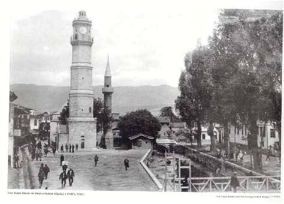

Tokat Clock Tower
The Tokat Clock Tower is a historic landmark located in the city center of Tokat. Dating back to the Ottoman period, this tower is one of the symbols of the city. Although the exact construction date is not known, it exhibits the characteristics of Ottoman architecture.
The height of the tower is approximately XX meters. It has a square plan and stands out with the clock mechanism located at its top. The clock tower is an important structure that contributes to the historical texture of Tokat and forms the core of the city center.
Visitors can explore the Tokat Clock Tower to learn more about the city's history and cultural heritage. Additionally, the tower, along with other historical buildings in its vicinity, forms one of the tourist routes of the city.